Работа в командной строке¶
Команды bash являются неотъемлемой частью разработки. Командная строка, не только bash, но и другие, дает бОльшие возможности по сравнению с любым графическим интерфейсом. Любой интерфейс полагается на эти команды и вызывает их с соответствующими параметрами.
Мотивация¶
Относитесь к
bashкак универсальному скриптовому языку, который покажет одинаковое поведение на разных системах Линукс. С помощью bash и различных утилит мы можем получать доступ к «железу» машины, на которой работаем, и настраивать автоматические сценарии. Это можно осуществить и с использованием языков программирования, но сделать это будет сложнее, и реализация будет зависеть от конкретного языка программирования. Но если мы напишемbash, то «дернуть» его из любого языка программирования не составит труда, так как большинство из них поддерживает системные вызовы. Если же вызов системных функций невозможен или неудобен, обмен информацией всегда доступен через файлы, куда можно записать информацию изbash-скрипта, а прочитать изpython.При работе на своей компьютере вы можете не оценить все достоинства командной строки, однако она точно понадобится, чтобы настроить работу вашего приложения на удаленном сервере, физическом или виртуальном, к которому вы будете подключаться по ssh и на котором может быть в принципе не установлен оконный интерфейс.
Ниже будут описаны команды, которые помогут ходить по файловой системе, создавать, копировать и перемещать файлы, изменять разрешения для файлов, передавать владельца у файла, просматривать запущенные процессы и открытые порты. Предположим, у нас есть пользователь с именем artem, на машине, которая называется pc. Тогда при запуске командной строки мы увидим предложение ввода команды:
artem@pc:/$
Мы видим, что здесь указаны имя пользователя и имя компьютера через символ @. Далее после двоеточия (:) указан текущий путь, сейчас мы находимся в корневой директории, далее символ $ для отделения команды. Начнем изучение командной строки с команды, которая позволяет ходить по файловой системе.
Hint: при нажатии на стрелку вверх в командную строку будет подставлена предыдущая команда. Стрелку можно нажимать несколько раз
Hint: Дополнительные информацию и опции по каждой команде можно увидеть вызвав man command или command --help, man сокращенно от manual
Мы надеемся, что это было достаточно убедительно, чтобы не пройти мимо темы bash.
cd - change directory¶
Команда для смены директории. При вызове происходит переход в директорию, которая указана после команды cd /path/to/destination. Предположим, у нас есть пользователь с именем artem. Следующие команды можно выполнить, чтобы перейти сначала в директорию home, а затем в домашнюю директорию пользователя /home/artem:
artem@pc:/$ cd /home
artem@pc:/home$ cd ./artem
artem@pc:~$
Заметьте, что во втором случае мы использовали ./ для перехода по относительному пути. Также видно, что меняется текущий путь, в котором мы находимся: в первой строке это была корневая директория (/), во второй — директория, в которой содержатся все домашние директории всех пользователей данной системы (/home). В третьей строке вместо пути мы видим символ ~, который является сокращением для домашней папки конкретного пользователя. Две команды выше эквиваленты одной команде с указанием абсолютного пути:
artem@pc:/$ cd /home/artem
Команда cd /artem вызовет ошибку, так как будет происходить поиск в корневой директории, а в ней НЕ содержится директории artem.
При использовании cd можно использовать сокращения, которые позволяют переходить по определенным путям, не прописывая полный путь (в примерах ниже # означает начало комментария):
cd ~ # переход в домашнюю папку
cd ../ # переход на один уровень выше
cd ../../ # переход на два уровня выше, чтобы уйти еще выше, можно добавлять ../
cd - # возврат в предыдущую директорию
cd . # текущий каталог
На рисунке ниже представлено использование описанных команд.
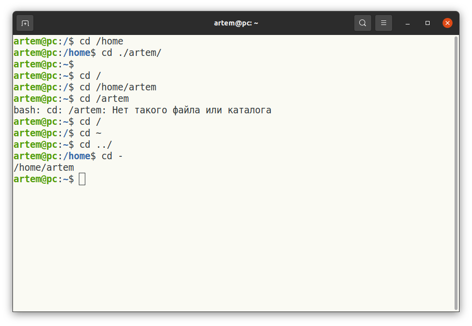
При использовании команды cd необязательно помнить полное наименование директории. Можно начать писать путь и затем нажать на TAB для автодополнения.
artem@pc:/$ cd /usr/loc # нажимаем TAB
artem@pc:/$ cd /usr/local/
Если написанного пользователем будет недостаточно для того, чтобы однозначно определить путь, командная строка выдаст все возможные варианты:
user#pc: cd /usr/l # нажимаем TAB
lib/ libexec/ local/
user#pc: cd /usr/l
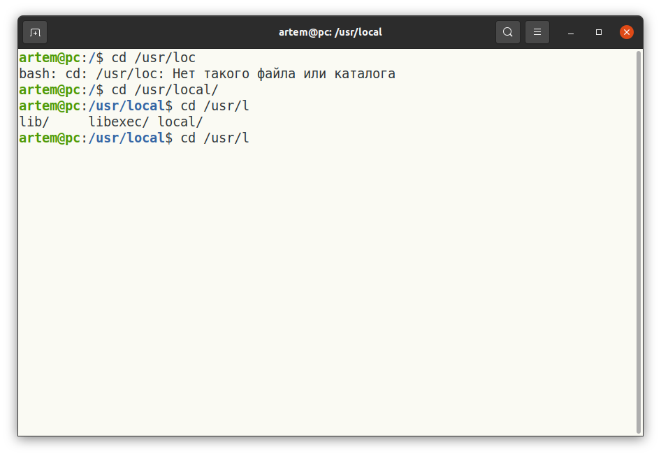
Вопросы для проверки:
Что можно указать после команды cd?
Абсолютный путь (верно)
Относительный путь (верно)
Адрес веб-сайта (НЕверно)
Один из специальных наборов символов, например,
../(верно)
ls - list¶
Для просмотра содержимого директории можно использовать ls. При вызове без параметров будет показано содержимое текущей директории. Также можно указать путь ls /path/to/dir, в этом случае будет показано содержимое указанной директории.
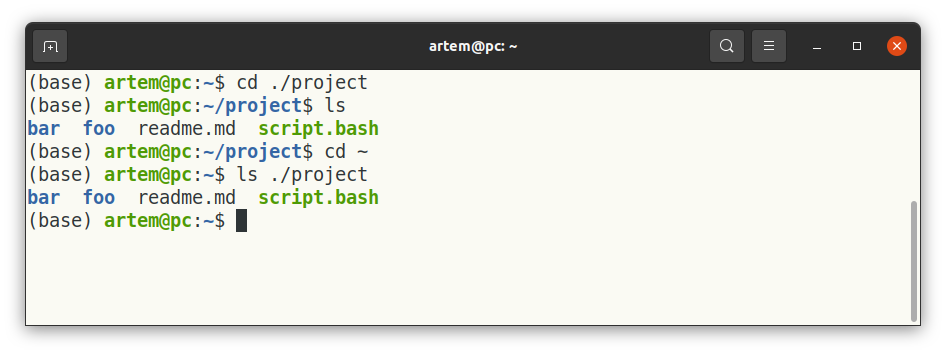
Мы видим, что разные имена подкрашены по-разному, на картинке выше три вида разметки. В вашей командой строке цвета могут отличаться. На картинке синий обозначает директорию, черный — обычный файл и зеленый — исполняемый файл. Но как понять это без цветовой индикации? Для этого вызовите ls -l:
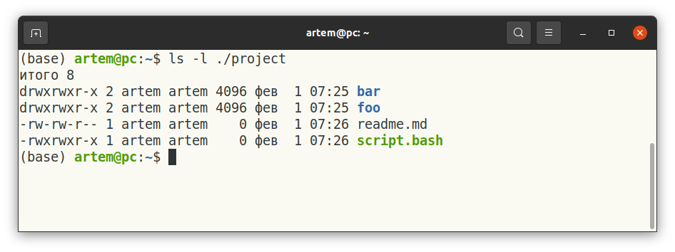
Теперь мы видим больше информации по каждому файлу и директории в project. Среди этой информации: разрешение, владелец, группа, размер, дата последнего изменения, имя файла. Как видите, директория имеет букву d в разрешениях, а исполняемый файл, в отличие от неисполняемого, имеет атрибут x.
Для просмотра скрытых файлов нужно указать параметр a. К скрытым файлам относятся директории, которые создаются при инициализации репозитория git.
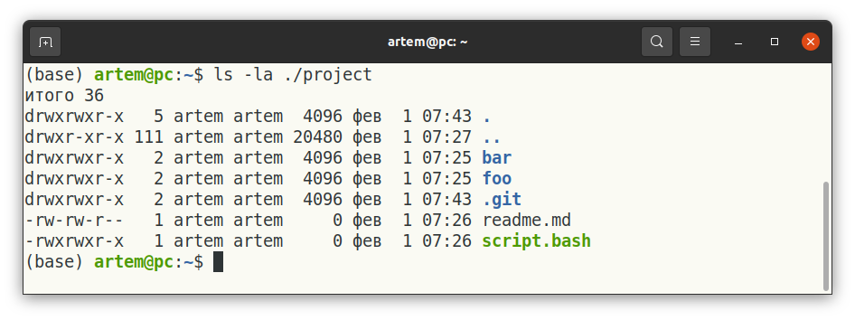
Вопросы для проверки:
Можно ли указывать ls без параметров?
Да (верно)
Нет (НЕверно)
clear¶
Командой clear можно очистить терминал от вывода. При этом история команд останется, и их по-прежнему можно доставать, нажимая на стрелку вверх.
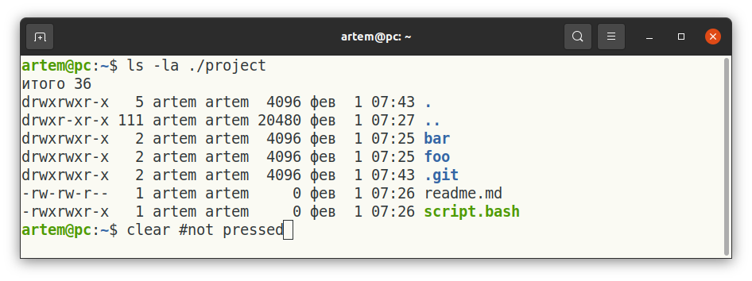
При использовании clear мы увидим пустой терминал:
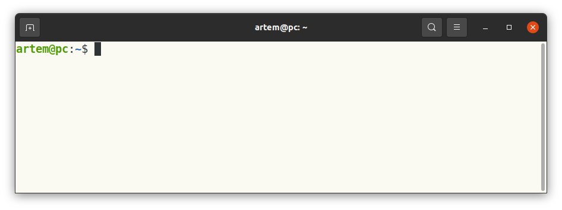
PS: для скриншотов данного материала
clearиспользовалось ооочень много раз :)
mkdir - make directory¶
Для создания директорий мы используем команду mkdir. Так же, как в случае с cd и ls, мы можем использовать относительный путь. Если директория уже существует, будет выдано сообщение об ошибке.
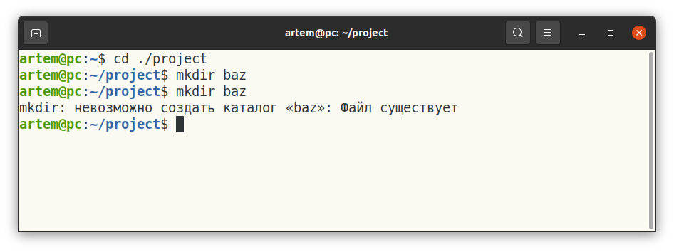
touch¶
Представьте ситуацию: нужно узнать время, когда последний раз запускалось то или иное приложение, которое запускается в фоне. Существует множество способов это сделать: запись в базе данных, анализ логов и так далее. Самой простой способ для bash-скрипта — изменение времени последнего изменения какого-либо файла. Это можно сделать, записав что-то в файл. Если такой вариант не подходит, воспользуйтесь командой touch, которая как раз предназначена для изменения времени обращения к файлу на текущее, при этом открытие файла не происходит.
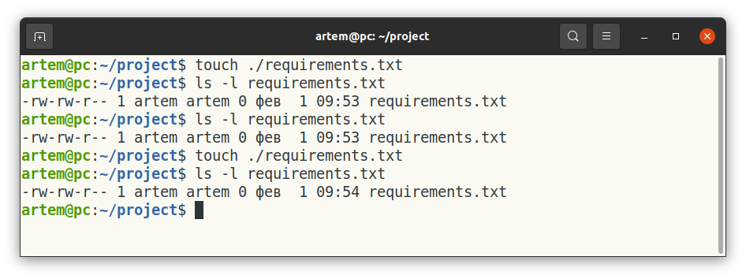
Если файл не существует, он будет создан пустым, если не указан аргумент -с.
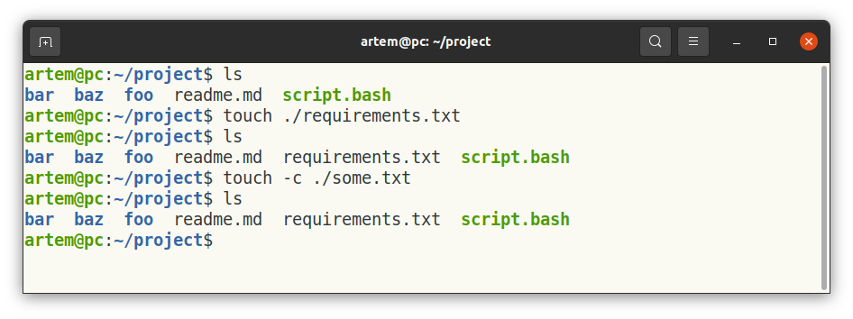
cat - concatenate¶
Читает содержимое файлов и выводит его. Добавим в project директорию data и два файла items_part1.txt и items_part2.txt.
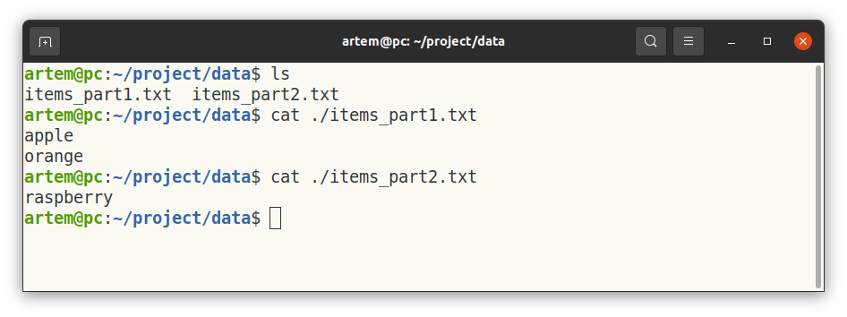
Можно использовать cat для склеивания содержимого нескольких файлов: укажите несколько файлов после cat, затем >> и имя файла, в который нужно слить данные. Символы >> означают перенаправление потока, т.е. мы делаем вывод не в стандартный поток, а, например, в файл.
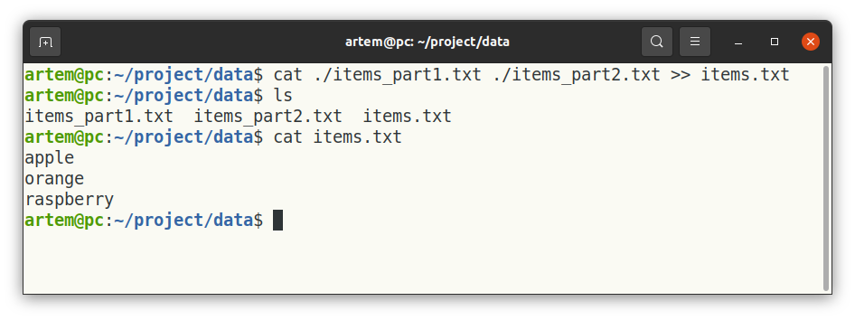
С помощью cat можно пронумеровать строки в файлах сквозной нумерацией.
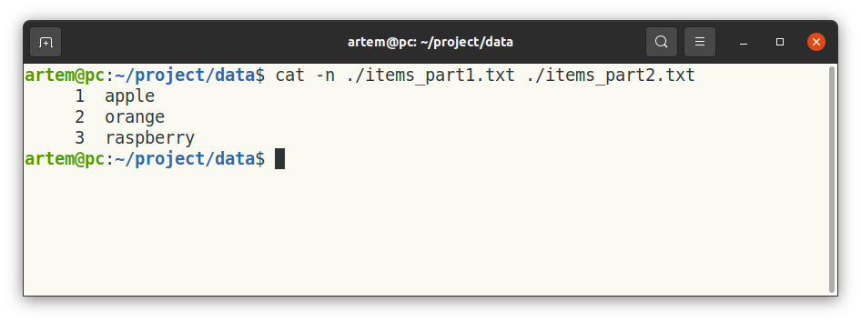
Hint: посмотрите также команды head и tail, они выводят начало и конец файлов. tail будет удобен для просмотра журнала логов.
Hint: >> и > перенаправляют поток и создают файл, если его нет. Отличие состоит в том, что >> добавляет новое содержимое в конец файла, а > перезаписывает файл, удаляя предыдущее содержимое этого файла.
echo¶
Обычно используется в скриптах для вывода информации (как print в python). Также с помощью echo можно записать строку в файл, если файла не было, он будет создан.
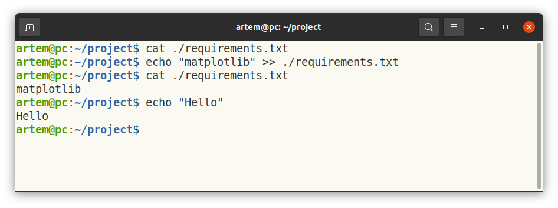
export¶
Используется для установки переменных среды. Команда export отмечает переменную окружения для экспорта с любым новым дочерним процессом, и это позволяет дочернему процессу наследовать все отмеченные переменные. Они нам понадобятся для того, чтобы использовать ту информацию, которую мы не хотим прописывать в коде приложения, например, параметры доступа. Хардкодить такие значения неудобно, так как можно случайно закоммитить их, и придется все менять. Например, так сделано в проекте по созданию чат-бота, посмотрите секцию Setup в README. Ниже приведен пример использования export.
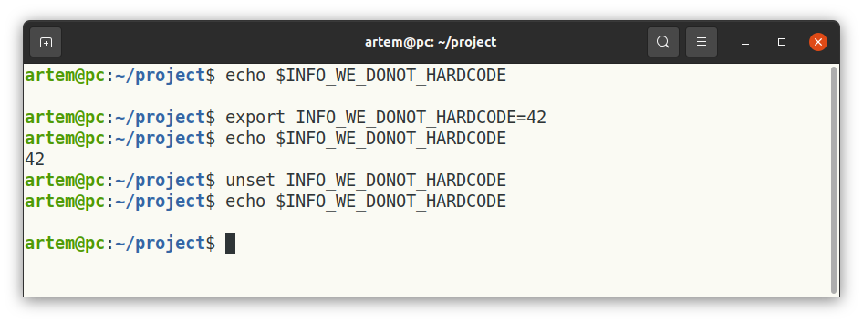
Подробнее с вариантами использования export можно ознакомиться здесь.
$¶
Есть несколько конструкций, в которые входит $. Это может путать, но если относиться к этим конструкциям, как к обособленными элементам bash, так их легче воспринимать.
Символ $ ставится перед переменной для того, чтобы получить ее значение. По умолчанию любое имя считается строкой.
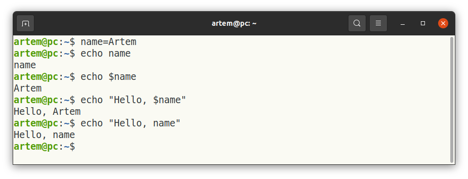
При этом использование $ внутри двойных кавычек и без них может вызвать разное поведение, если в значении переменной содержатся специальные символы. Если $ используется в двойных кавычках, то значение переменной будет выдено как есть. Если $ используется без кавычек, то bash проведет интерпретацию специальных символов, например, как ниже с *, которую мы использовали для поиска файлов по шаблону.
Другое использование $ — запись вывода команды в переменную. В этом случае $ используется совместно со скобками.
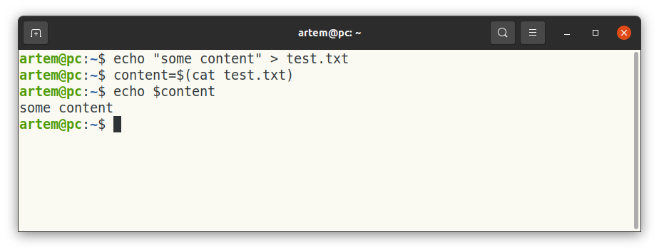
В bash нельзя просто так взять и выполнить математическую операцию. Для этого используется $ совместно с двойными скобками.
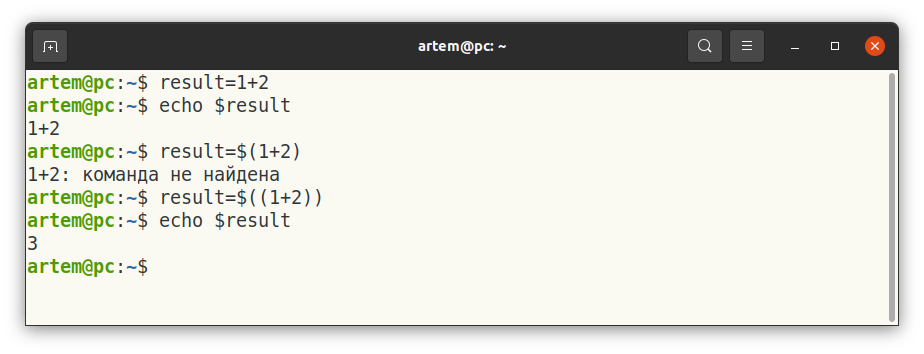
Также $ используется для получения значений аргументов, переданных в скрипт. Можно считать, что сама оболочка присваивает номера переменным вместо того, чтобы именовать их. Это похоже на то, как мы используем sys.argv[N] в python, когда хотим получить то, что передано при вызове нашей программы.
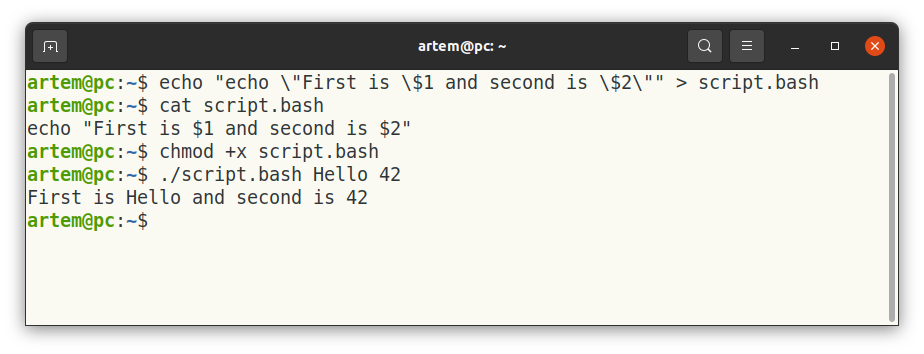
Первая команда на скриншоте выше используется для того, чтобы создать код скрипта. Вы также можете взять код из двойных кавычек echo "First is $1 and second is $2" и сохранить его в файл script.bash, используя любой текстовый редактор. Описание chmod смотрите ниже.
Есть еще один вариант использования $, но на этот раз с фигурными скобками. Это назвается parameter expansion и позволяет произвести операции над значениями переменной и передать результат дальше. Ниже пример со строкой name=ArtemVesnin и срезами, а также со списком name=(Artem Vesnin) и обращением к элементам списка.
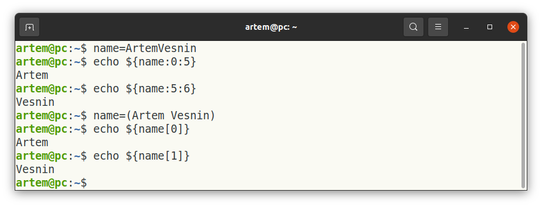
Также существует специальная переменная $?, куда записывается статус выполнения последней команды.
ls non_existent_file.txt
if test $? -ne 0 ; then
echo "Error: File not found or other issue occurred."
fi
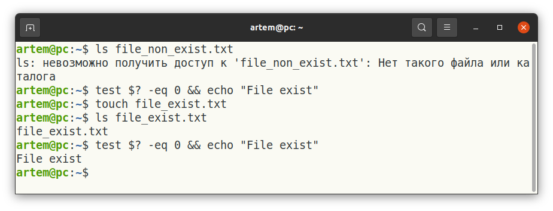
Здесь мы использовали test для проведения операций сравнения. -eq сокращенно от equal.
rm — remove¶
Для удаления файлов используется команда rm. Удалить можно один файл, указав путь до него, или несколько, указав ту часть пути, которая может меняться через *, т.е. задав шаблон, в который должны вписаться пути.
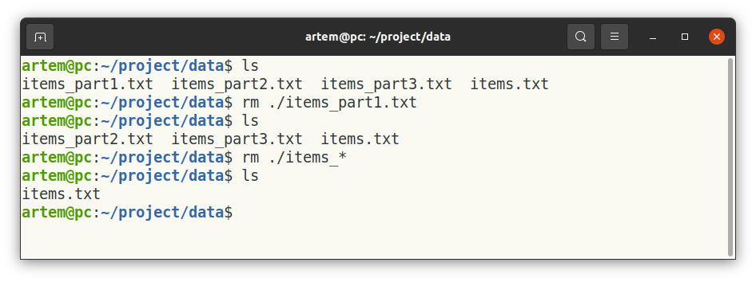
Удаление каталогов требует дополнительных опций, так как удаляются не отдельные файлы, а все содержимое каталога, поэтому нужно делать это рекурсивно, заходя во все вложенные каталоги.
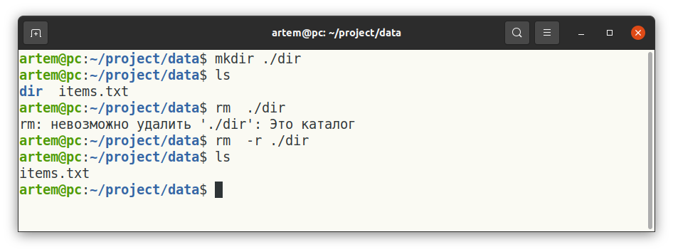
rmdir — remove directory¶
Удаление пустых директорий или группы вложенных пустых директорий.
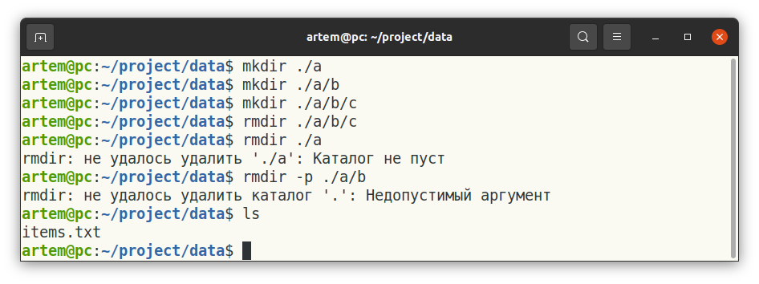
Обратите внимание на сообщение об ошибке (вообще всегда смотрите на результат ваших действий, чтобы понимать, выполнилась ли команда). Часть работы была сделана: удалены директории ./a/b и ./a. А самый верхний уровень этого пути (.) — это, как мы помним, текущая директория, т.е. ~/project/data, и rmdir сам не дает пользователю удалить директорию, в которой он находится. Правильным будет mkdir -p a/b, хотя в большинстве случаев ./a/b и a/b равнозначны.
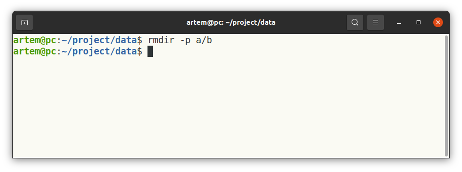
cp — copy¶
Копирует один или несколько файлов из одного места в другое. Так же, как и в случае с rm, можно указывать шаблон, которому должны соответствовать пути.
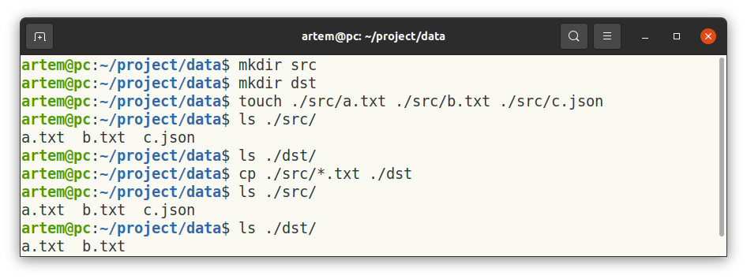
mv — move¶
Перемещает один или несколько файлов из одного места в другое. Так же, как и в случае с rm, можно указывать шаблон, которому должны соответствовать пути.
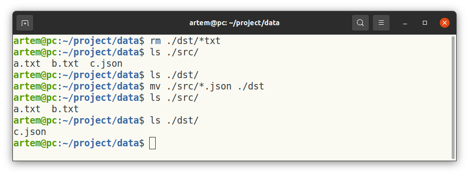
mv можно использовать для переименования файлов.
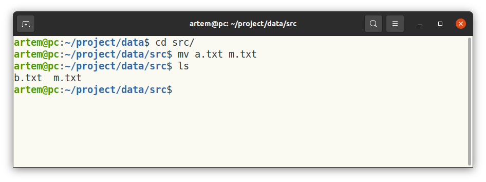
chmod — change mode¶
Изменяет разрешения файлов и директорий. Помните, на рисунке, который уже был выше, script.bash подсвечивался зеленым? Это означало, что у него есть разрешение на исполнение. Давайте удалим его. Создадим скрипт заново и запишем туда строку ls -l с помощью echo, попробуем выполнить, получим ошибку, потом попробуем дать разрешение на исполнение и выполним еще раз.
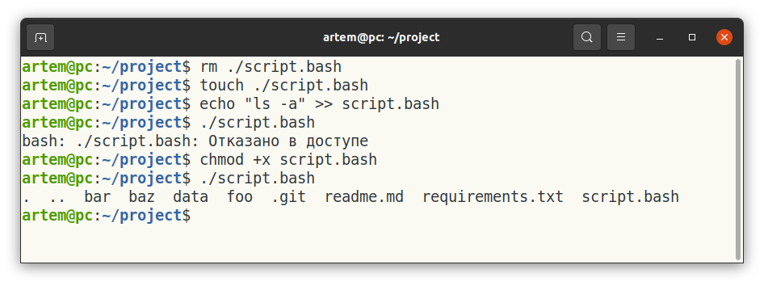
Разрешения делятся на три категории:
r(read) — чтение;w(write) — запись;x(execute) — исполнение.
А также на три уровня:
Владелец файла или директории.
Группа пользователей, к которой принадлежит владелец.
Все остальные.
К примеру, права доступа [drwxrwxrwx] дают полный доступ на чтение, редактирование и запуск абсолютно всем пользователям. Рассмотрим этот случай подробнее. Ключи доступа из примера можно поделить на 4 секции: 1 — [d], 2 — [rwx], 3 — [rwx], 4 — [rwx].
1 секция может быть либо «d» — директория, либо «-» — файл. 2 секция показывает права доступа владельца файла или директории (r — чтение, w — запись, x — выполнение). 3 секция показывает права доступа группы, в которой находится владелец, rwx — аналогично. 4 секция показывает права доступа всех остальных пользователей системы.
Например, -rwxr-xr-- означает, что владелец может читать, писать и исполнять файл, пользователи из группы — только читать и исполнять, все остальные — только читать. Можно вообще не давать разрешений, например, -rwxr-x--- запретит доступ к файлу всем пользователям, кроме его владельца (того, кто создал этот файл) и участникам группы, к которой он относится.
Все группы, созданные в системе, находятся в файле /etc/group. Посмотрев содержимое этого файла, вы увидите список групп linux, которые уже есть в вашей системе. Этот список может быть большим и малоинформативным для рядового пользователя. Чтобы вывести список всех групп, членом которых является текущий пользователь, можно использовать команду
groups.
sudo — superuser do¶
В большинстве случае для выполнения команд описанных, выше достаточно обычных прав, которые имеются у пользователя. Но в ряде случаев, при использовании системных утилит или смене владельца у файла (см. chown ниже), необходимо использовать права суперпользователя. Первый способ — авторизоваться, используя аккаунт суперпользователя в системе. Но такой сценарий не является предпочтительным, так может привести к случайному выполнению команды, которая может нанести вред системе. Более широкое применение получил способ, при котором для выполнения команды с правами суперпользователя перед командой добавляется sudo. Ниже представлен пример передачи владения скрипта пользователю root, после этого мы сможем выполнять скрипт только от имени нового владельца, т.е. root (для текущих разрешений скрипта -rwxrwxr--).
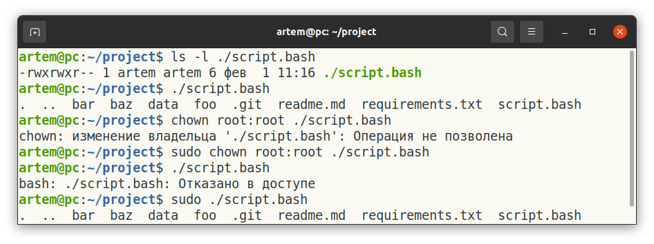
chown — change owner¶
Изменяет владельца файла или директории. При этом, если вы хотите сделать это рекурсивно, для всех файлов внутри директории, нужно указать специальный флаг -R для рекурсивной работы. При использовании мы указываем имя пользователя и группу через двоеточие username:group. Каждый пользователь может состоять в одной или нескольких группах. Можно менять владельца и не менять группу. В примере ниже мы вернули владение группе artem, и теперь можем запускать файл от обычного пользователя (для текущих разрешений скрипта -rwxrwxr--).
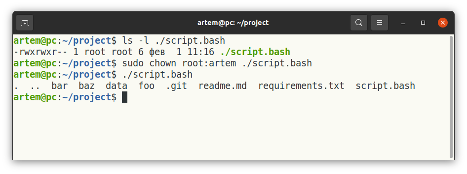
history¶
Выводит историю выполненных команд.
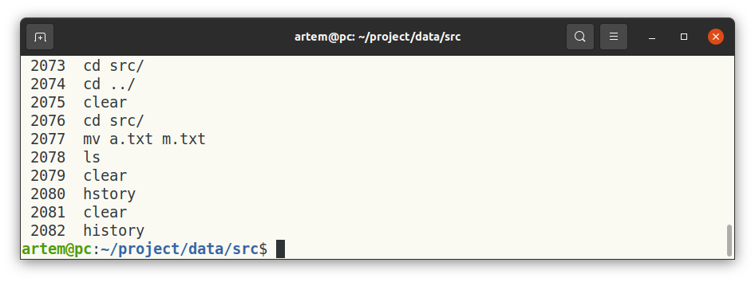
grep — global regular expression print¶
Производит поиск в тексте строки, содержащей определенную подстроку. При этом текст можно получить прямо из стандартного вывода или из файла. Бывает полезным, чтобы вспомнить, как выполнялась та или иная команда в bash.
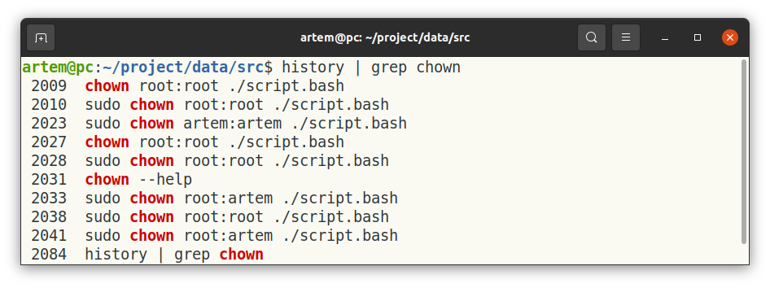
Также можно облегчить себе поиск документации по man, если примерно помнить термин.
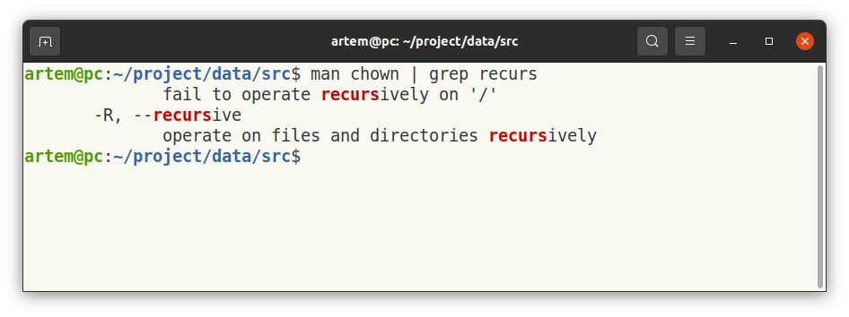
Или найти что-нибудь в документе, который вы читаете:
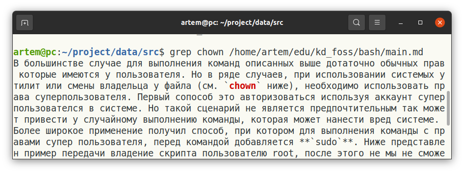
Hint: | перенаправляет выходной поток от одной команды к входу другой. Можно использовать, чтобы миновать запись в файл на диске.
top — table of process¶
Выводит активные процессы, а также информацию по загрузке процессора и памяти. Информация будет обновляться в терминале. Чтобы выйти из этого режима, нажмите Ctrl-C.
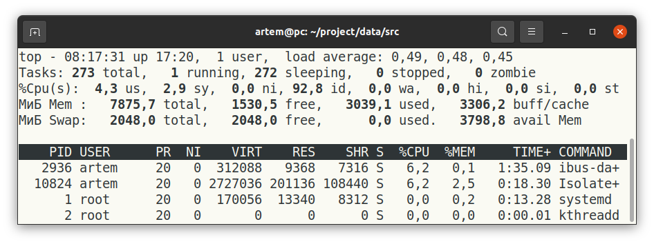
Hint: htop дополняет функциональность top. Поставьте htop через менеджер пакетов, который используется в вашем дистрибутиве (sudo apt install htop в Ubuntu).
Практические примеры¶
Ниже мы рассмотрим несколько примеров использования bash и еще раз повторим написанное в мотивации к этому уроку: рассматривайте bash как дополнительный инструмент, который может облегчить решение некоторых задач. Ради тренировки можно написать, например, калькулятор, но его легко сделать на вашем любимом языке программирования гораздо быстрее, поэтому ниже мы рассмотрим примеры, которые используют доступ к системным утилитам и позволяют нам получить информацию о подключенных устройствах и их состоянии.
Мониторинг подключения usb-устройств¶
Ниже приведены примеры скрипта, отслеживающего подключение и отключение usb-устройства (код):
#!/bin/bash
# Define the log file path
LOG_FILE="./usb-monitor.log"
# Get the initial list of connected USB devices
initial_devices=$(lsusb)
# Function to log the events
log_event() {
local event_time="$(date +'%Y-%m-%d %H:%M:%S')"
local event_type="$1"
local device_id="$2"
echo "$event_time | $event_type | $device_id" >> "$LOG_FILE"
}
# Function to check for new devices
check_devices() {
while true
do
current_devices=$(lsusb)
echo "$initial_devices" | sort > "./idev.txt"
echo "$current_devices" | sort > "./cdev.txt"
new_devices=$(comm -13 "./idev.txt" "./cdev.txt")
removed_devices=$(comm -13 "./cdev.txt" "./idev.txt")
if test "$new_devices" != ""
then
for device in "$new_devices"; do
log_event "connected" "$device"
done
fi
if test "$removed_devices" != ""
then
for device in "$removed_devices"; do
log_event "disconnected" "$device"
done
fi
initial_devices=$current_devices
sleep 1 # Adjust the update interval as needed
done
}
# Start monitoring, just call check_devices()
check_devices
Мы видим ряд конструкций, которые доступны в обычном языке программирования, например, условные операторы, циклы, функции. Реализация их в bash имеет свои особенности, но понять их синтаксис несложно, если вы знаете хотя бы один язык программирования. Вызов функции также имеет особенности, например, мы передаем аргументы не в скобках, а после вызова функции. Особенности использования $ мы рассмотрели выше.
В скрипте мы используем новую команду comm, которая сравнивает два файла и выводит результат в три колонки, вторая из которых — строки, уникальные для второго файла (что находится в других колонках, можно посмотреть в документации man comm). Аргументы -13 удаляют колонки 1 и 3, оставляя только вторую. Поэтому мы меняем файлы местами, чтобы определить new_devices и removed_devices. Функция log_event() записывает информацию о новых или отключенных устройствах в файл. Обратите внимание на вызов check_devices в конце скрипта.
Мы проверяем устройства каждую секунду sleep 1, поэтому при быстром подключении и отключении можем потерять информацию о событии. Далее мы рассмотрим пример того, как этого избежать.
Также мы использовали команду test, которая производит сравнение аргументов с использовании логических операторов. Вы можете встреть ["$new_devices" != ""] вместо test "$new_devices" != "", это одно и то же.
Мониторинг подключения устройств с помощью dmesg¶
Выше мы рассмотрели скрипт для мониторинга usb-устройств с помощью lsusb. В Линукс есть команда для мониторинга всех сообщений, которые появляются в системе. Мы можем настроить шаблоны, которые позволят нам отфильтровать нужные нам сообщения. Ниже приведен пример, которые позволит отловить все сообщения, где встречается подстрока «usb». При этом, в отличие от скрипта с lsusb, мы лучше защищены от потери события, так как dmesg выводит сообщения из буфера, который хранит не только последнее сообщение, но и историю сообщений (код):
#!/bin/bash
prev_records=$(dmesg | tail -20)
monitor_devices_records() {
while true
do
curr_records=$(dmesg | tail -20)
new_records=$(comm -13 <(echo "$prev_records") <(echo "$curr_records"))
usb_records=$(echo "$new_records" | grep usb)
if test "$usb_records" != ""
then
echo "$usb_records"
fi
prev_records=$curr_records
done
}
# Start monitoring
monitor_devices_records
Мониторинг оставшегося места на диске¶
Скрипт, приведенный ниже мониторит доступное на диске место и предупреждает, когда процент занятого места превышен. Конструкцию ${} мы описывали выше. Из нового мы видим конструкцию ($df_record), которая позволяет создать список из значения переменной df_record, например, «one two three» → («one», «two», «three») (код):
#!/bin/bash
monitor_device=$1 #device to monitor eg. /dev/sdc1
alert_level=$2 #available percentage to alert eg. 1
monitor_space_usage() {
while true
do
df_record=$(df | grep "$monitor_device")
df_record_array=($df_record)
avail=${df_record_array[3]}
total=${df_record_array[1]}
if test $(( 100 * $avail / $total)) -le $alert_level
then
echo "Alert disk is almost full"
fi
sleep 1
done
}
monitor_space_usage